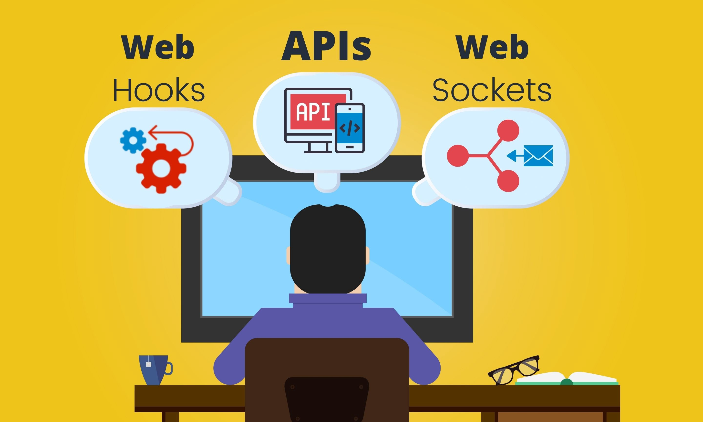
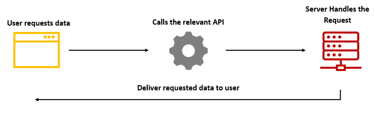
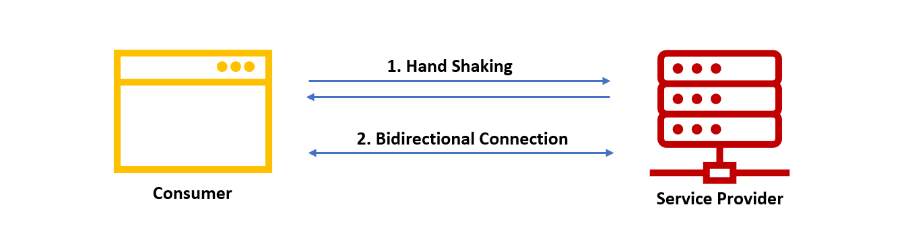
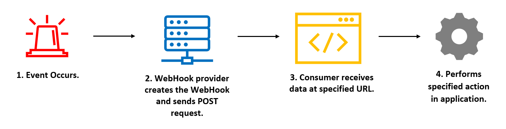

API、WebSockets 和 WebHooks：究竟应该选谁

无论开发什么应用，我们都需要一种可靠的机制来进行组件间通信。
例如，在 Web 应用中，我们需要在浏览器和服务器之间进行通信；有时，服务器需要将消息返回浏览器；此外，在某些情况下，后端服务还可能依赖于另一个需要很长响应时间的服务。
这就是 API、WebSockets 和 WebHooks 发挥作用的地方。它们为该问题提供了完美的解决思路，让我们得以在应用的不同模块之间进行通信和数据同步。
尽管这三种方法主要都是用于通信的，它们之间还是有一些明显的区别。在本文中，我们将讨论如何使用这三种 API，以及如何根据使用场景选择最合适的方法。
API —— 为用户提供接口和协议。
API（应用程序接口）是用户与服务商之间的协议，它通常暴露在 HTTP 请求中。
对于 Web 和移动设备上进行的基本 CRUD 操作，甚至是在集成服务访问别的服务等场景，这个方法都非常有效。大多数情况下，API 通信使用 JSON 或 XML 作为传输数据的格式。
让我们假设一个场景 —— 用户在电商网站上搜索商品。一旦用户使用搜索查询请求了自己想要查找的商品，他就会在几秒钟内得到响应。API 的工作方式就是如此简单。

正如我最初提到的，API 请求是用户发起的，因此它们非常适合如下应用程序：持久状态、执行快速操作以接收来自后端操作的实时响应。
但是，使用 API 的时候，除非浏览器定期发送请求检查更新情况，否则没有一种直接的方法可以让服务器主动与浏览器进行通信。
举个例子，诸如报告生成之类的任务可能会花费更多的时间和资源，而这通常需要在后台完成。因此用户请求服务商去生成报告后，服务器并没有直接的方法来告知用户任务已完成，我们的浏览器可能需要持续轮询 API。
但是轮询效率不高，我们有更好的方法（如 WebSockets）来解决此类问题。
WebSockets —— 实时通信的一种方案
** WebSockets 允许用户和服务商之间建立一个持久的双向通信来解决这个问题。**
使用全双工信道可以让服务器随时向用户发送消息。由于所有现代浏览器都支持 WebSockets，可以说它是实时 Web 应用场景的最佳解决方案。

然而一直保持连接打开会消耗资源、影响能耗（移动设备），并且难以扩展服务。
例如，还是考虑上面那个生成报告的场景，在 Web 上使用 WebSockets 可能是一个不错的选择，但对于移动设备来说不是最佳方案，因为我们可能需要研究诸如推送通知之类的技术。此外，如果我们的后端是依赖于外部服务来生成报告的，那么 WebSockets 同样不是后端与外部服务通信的最佳选择。
WebHooks 这类机制在这里就派上用场了。

WebHooks —— 完美的后端回调解决方案
WebHooks 通过提供一种断开机制以接收来自服务商的响应，从而为 WebSockets 中的棘手难题提供了解决方案。
如果从技术层面来看，用户将 WebHooks（准确来说是回调 URL）注册到服务商中，这个 URL 将充当接收来自 WebHooks 数据的地方。
在大多数情况下，这个 URL 属于另一台服务器。WebHooks 通常用于在服务器或后端进程之间进行通信。
如果深入研究通信的过程，我们可以将该过程分为四个部分：

- 事件触发器：这是由你指定的运行 WebHooks 的事件。每当此事件发生时，WebHooks 都会发送请求。
- WebHooks 提供程序创建 WebHooks 并发送 POST 请求： WebHooks 提供程序负责监听事件并构建 WebHooks。一旦事件被触发，WebHooks 提供程序会发送一个 HTTP POST 请求发送给第三方应用程序。
- 第三方应用程序接收数据：第三方应用程序将接收到数据，并转发给 URL 或者我们提供给 WebHooks 提供程序的侦听器。
- 第三方应用程序中指定的操作：一旦应用程序收到 POST 请求，开发人员就可以任意使用数据。*
从表面上看，大概我们都会觉得这与 API 流程完全相反，因此，大多数人将 WebHooks 称为反向 API。
结论
正如我最初提到的，WebHooks、WebSockets 和 API 都可以用于通信，只是它们具有不同的使用场景。
对于仅需要基本 CRUD 操作和同步响应的应用程序，API 是最佳选择。而且，API 可以轻松地与 Web 和移动应用程序以及服务集成一起使用。
但是，如果我们的 Web 应用需要与后端进行实时通信，那么我们更应该选择 WebSockets，因为它允许我们在浏览器和后端之间建立双向信道。
但是，WebHooks 与 API 和 WebSockets 稍有不同，它更像是反向 API。一旦用户在服务商处注册了 WebHooks URL，后者就可以在需要时调用 WebHooks。
相信现在你已经了解这些通信方式的不同使用场景，如果你有什么想要分享的内容，请在评论区中留言。
感谢你的阅读！
如果发现译文存在错误或其他需要改进的地方，欢迎到 掘金翻译计划 对译文进行修改并 PR，也可获得相应奖励积分。文章开头的 本文永久链接 即为本文在 GitHub 上的 MarkDown 链接。
掘金翻译计划 是一个翻译优质互联网技术文章的社区，文章来源为 掘金 上的英文分享文章。内容覆盖 Android、iOS、前端、后端、区块链、产品、设计、人工智能等领域，想要查看更多优质译文请持续关注 掘金翻译计划、官方微博、知乎专栏。